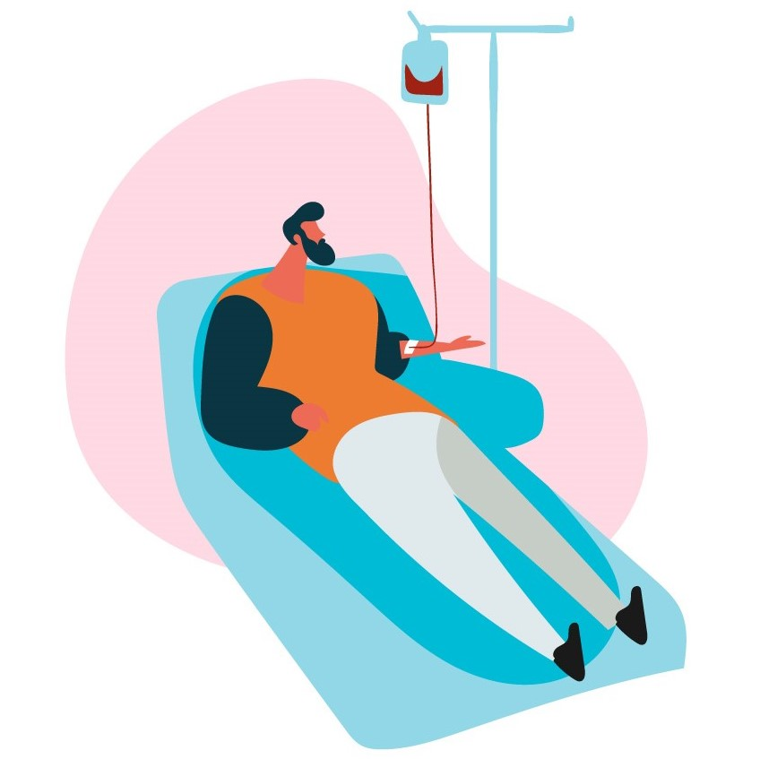

Blood donation camp in Sree Narayana College Vadakara by NSS UNIT 07
Faq
What is BLOOD Donation?
Donating blood is a life saving measure especially when you have a rare blood type. Donating
blood is safe and simple. It takes approximately 10-15 minutes to complete the blood donation
process. We can save up to 3 to 4 precious lives by donating blood.
